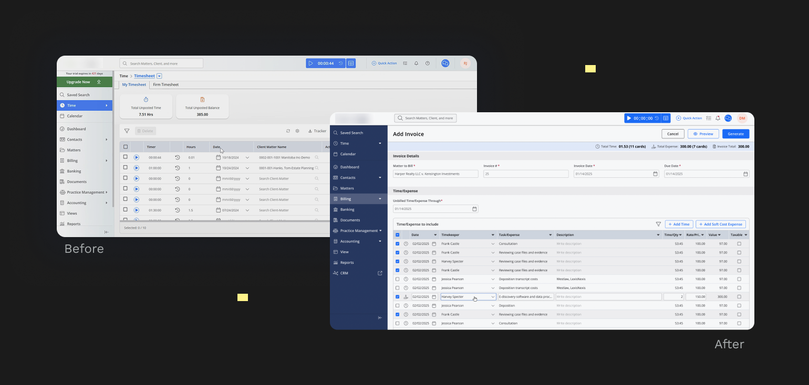
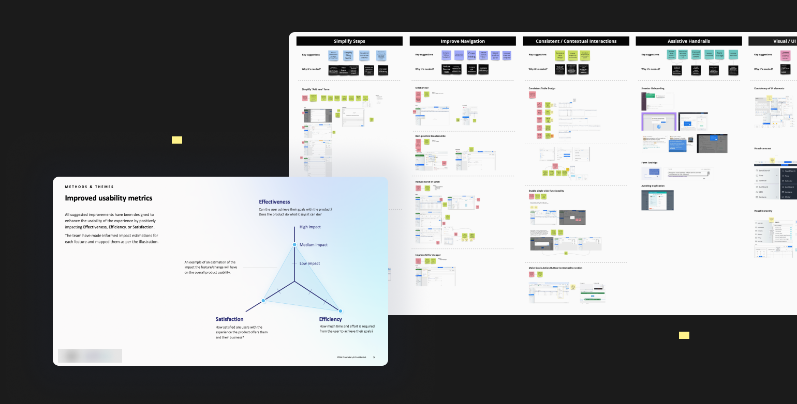
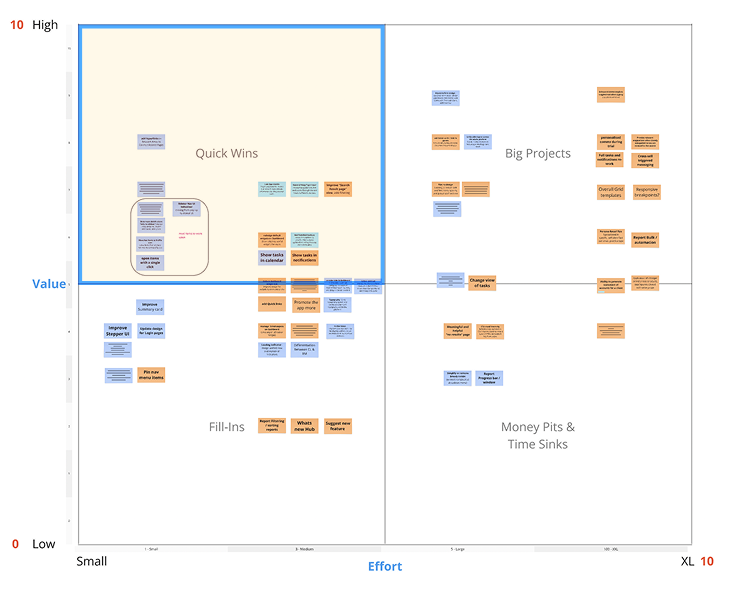

Improvements for Legal Practice Management App
SaaS
* Client names and some visuals are anonymized under NDA.

Project goals
This platform is created to automate many of the time‑consuming tasks that law firms traditionally handle manually, allowing them to save time, reduce errors, and improve overall efficiency.
The main goal was “Quick wins”, which means helping to increase retention by improving UX for key workflows, reducing steps and clicks with small dev effort.
My role
- I was working in a large design team (our designers + Client’s product team)
- Conducted heuristic evaluation and identified high-impact usability issues across key workflows
- Worked on UX improvements for a complex SaaS platform with focus on usability and retention
- Designed interaction patterns and prototypes to simplify complex tasks and reduce cognitive load
- Collaborated with stakeholders and Client’s product team to ensure business value and feasibility

After: reorganized sidebar nav by moving menu items elsewhere, new color for the sidebar to improve contrast with workspace.
Before: dense screens with weak hierarchy and hard-to-find actions
Design process steps
- Analyzing existing research, artifacts and the current state
- Direct competitors analysis
- Gathering user feedback (pain points) from support
- Heuristic evaluation
- Feature prioritization for our design scope, plus additional requirements from PO and LD for specific features
- Interactive prototypes for client review, feedback and approval
Design challenges
Throughout the project, several challenges required flexibility, cross-team collaboration and continuous alignment:
- Tight timelines. The design track focused on near-term wins that moved into development quickly, so we worked in fast, iterative cycles.
- Multi-level approvals. Each design needed sign-off from our Design Leads, the client’s Product Owner, Design Lead and wider stakeholders, so all feedback had to be consolidated into the final designs.
- Evolving design foundations. The client’s Design System and documentation standards were still being defined, so we adapted our approach as they evolved.
Despite these challenges, we stayed agile and delivered designs that met both business goals and user needs.
Heuristic review findings
To identify usability issues and guide design improvements, we conducted a Heuristic Review of the platform, covering core product flows. These findings were used to form a prioritized backlog for future design.
Each finding was assessed for impact on: Effectiveness (task completion), Efficiency (time/effort) and Satisfaction (overall experience). We used usability metrics to justify our suggestions.
Effectiveness
task completion
Efficiency
time/effort
Satisfaction
overall experience

Each improvement was rated by its impact on Effectiveness, Efficiency and Satisfaction
Findings grouped by theme into key suggestions, with early wireframes for each
Feature prioritization
To define the design direction and align priorities, we created a Product Improvement Board in Miro, grounded in the Heuristic Review findings and insights from user interviews conducted by the design track. For each proposed improvement, our design team:
- defined sub-features
- prepared early wireframes to visualize potential solutions
- evaluated value (0–10 scale) and implementation effort (Epic Points)
The board became our key delivery artifact. Together with the client, we used it to agree on the final scope, so the most impactful improvements were addressed first.

Result
- Delivered end-to-end feature design and improvements within a 3.5-month engagement, from discovery to high-fidelity prototypes and successful handoff to development
- Improved usability of core workflows by reducing complexity and optimizing navigation patterns
- Increased efficiency for end users by minimizing steps and simplifying task completion
- Contributed to retention improvement by addressing key usability pain points